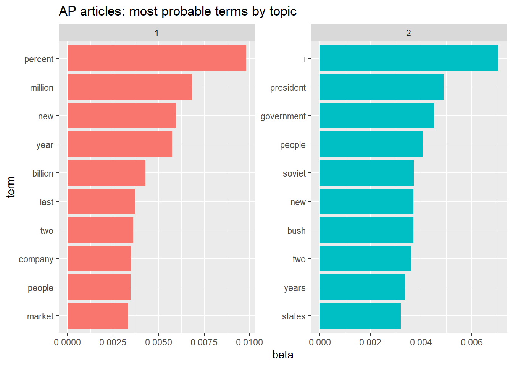
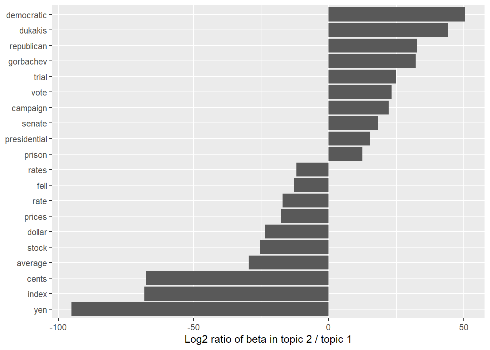

[1] "Life's but a walking shadow, a poor player "
[2] "That struts and frets his hour upon the stage, "
[3] "And then is heard no more: it is a tale "
[4] "Told by an idiot, full of sound and fury, "
[5] "Signifying nothing." Text Analysis
Part 1, session 2b of Data Mining Intro
Abstract
Introduce basic ideas and methods of text analysis.
Introduction
This session highlights some basic ideas and methods that underpin a rapidly advancing field. We follow the online book by Silge and Robinson cited below and use their R package tidytext. The authors emphasize the “tidy” formatting of data (i.e., as key-value pairs) along with a set of R packages sharing this approach, collectively called the R tidyverse.
Text Example
Toward the end of Shakespeare’s play “Macbeth”, the protagonist proclaims:
(Source: “Macbeth”, Act V, Scene V, lines 24-28.)
For purposes of technical analysis we break these flowing lines into a table of words. We begin as follows.
sf_line_tbl <- tibble::tibble(
l_idx = 24:28,
line = sound_fury
)
sf_line_tbl# A tibble: 5 × 2
l_idx line
<int> <chr>
1 24 "Life's but a walking shadow, a poor player "
2 25 "That struts and frets his hour upon the stage, "
3 26 "And then is heard no more: it is a tale "
4 27 "Told by an idiot, full of sound and fury, "
5 28 "Signifying nothing." The table above merely identifies the original line number of each line. The next step is to break each line into a sequence of “tokens”, where a token is a meaningful unit of text (such as a word) to be used as the unit of analysis. (“Tokenization” is the process of splitting text into tokens.) Applying tidytext::unnest_tokens() to the data table above, we obtain the following table, with just one token (word) per row.
sf_token_tbl <- sf_line_tbl |>
tidytext::unnest_tokens(
input = "line",
output = "word"
)
sf_token_tbl# A tibble: 38 × 2
l_idx word
<int> <chr>
1 24 life's
2 24 but
3 24 a
4 24 walking
5 24 shadow
6 24 a
7 24 poor
8 24 player
9 25 that
10 25 struts
# ℹ 28 more rowsThe next step is to remove so-called stop-words, that is, articles (“a”, “the”, …), connectors (“and”, “or”, …) and other words that provide structure to a sentence but otherwise carry little information. The tidytext package contains a data frame, stop_words, of such words, which enables us to remove them from the above table of tokens.
sf_tokens_xsw <- sf_token_tbl |>
anti_join(
y = tidytext::stop_words,
by = "word"
)
sf_tokens_xsw# A tibble: 16 × 2
l_idx word
<int> <chr>
1 24 life's
2 24 walking
3 24 shadow
4 24 poor
5 24 player
6 25 struts
7 25 frets
8 25 hour
9 25 stage
10 26 heard
11 26 tale
12 27 told
13 27 idiot
14 27 sound
15 27 fury
16 28 signifyingLarger Text Examples
We’ll use larger bodies of text via the following R packages.
Jane Austen’s novels
- Package
janeaustenr: Jane Austen (1775-1817) completed 6 novels, which the functionausten_books()returns as a data frame with 2 columns: thetextof the novels divided into strings (each approximating a line of printed text), andbook, which gives the titles of the novels (in order of publication) as a factor.
Here are the number of strings per book.
# A tibble: 6 × 2
book n_strings
<fct> <int>
1 Sense & Sensibility 12624
2 Pride & Prejudice 13030
3 Mansfield Park 15349
4 Emma 16235
5 Northanger Abbey 7856
6 Persuasion 8328Here are the ten words used most frequently across these novels (excluding stop-words).
| word | count |
|---|---|
| miss | 1855 |
| time | 1337 |
| fanny | 862 |
| dear | 822 |
| lady | 817 |
| sir | 806 |
| day | 797 |
| emma | 787 |
| sister | 727 |
| house | 699 |
The Gutenberg Project
- Package
gutenbergr: Enables the user to download and process public domain works in the Project Gutenberg collection.
The collection boasts over 75000 free electronic books. The data frame gutenberg_subjects uses the Library of Congress Classifications (lcc) and Library of Congress Subject Headings (lcsh) to categorize topics included in the collection. The package offers this and other such metadata to facilitate searching for desired works.
As a contrast with Jane Austen, here are some well-known science fiction novels of H.G. Wells (1866-1946).
# A tibble: 4 × 2
id title
<int> <chr>
1 35 The Time Machine
2 36 The War of the Worlds
3 5230 The Invisible Man
4 159 The Island of Doctor MoreauAmong these novels, here are the most frequently used words (again excluding stop-words).
| word | count |
|---|---|
| time | 454 |
| people | 302 |
| door | 260 |
| heard | 249 |
| black | 232 |
| stood | 229 |
| white | 222 |
| hand | 218 |
| kemp | 213 |
| eyes | 210 |
Class Exercise
Team up with a classmate and devise a way to compare word frequencies in the novels of Jane Austen and H.G. Wells, respectively. Share with the class your comparison of just the top 10 words used by each author. Propose a method for comparing all the words used by each author. Take 20 minutes to prepare to report to the class.
TF-IDF: Term Frequency - Inverse Doc Frequency
Can the number of times each word appears in a document be used to indicate what the document is about? On the one hand, the number of occurrences of a given word in a given document might indicate the importance of the word within the document. On the other hand, words that commonly occur in most documents are unlikely to distinguish the key ideas in a given document.
We’ve already introduced one way to separate the wheat from the chaff: remove stop-words. Another approach, called tf-idf, is to multiply a term’s relative frequency (tf) in a selected document by its inverse document frequency (idf) with respect to a collection or corpus of documents. That is, the relative frequency of a term \(t_0\) in a given document \(d_0\) is the number of occurrences \(\mathcal{n}(t_0, d_0)\) of the given term divided by the number of occurrences of all terms.
\[ \begin{align} tf(t_0, d_0) &= \frac{\mathcal{n}(t_0, d_0)}{\sum_{t \in d_0}\mathcal{n}(t, d_0)} \end{align} \]
As for inverse document frequency (idf), there are several alternative definitions. Here’s the definition we’ll use.
\[ \begin{align} idf(t, \mathcal{D}) &= \log_e \left( \frac{| \mathcal{D} |}{| \mathcal{D}_t |} \right) \\ \\ & t = \text{term} \\ & \mathcal{D} = \text{corpus of documents } \\ & \mathcal{D}_t = \{ d \in \mathcal{D} : t \in d \} \end{align} \]
Example: let \(\mathcal{D}\) denote the set of Jane Austen’s 6 novels, and let each novel take its turn as the document \(d_0\) of interest. For each book, the most distinctive word (that maximizes tf-idf) is as follows.
| book | word | n | tf | idf | tf_idf |
|---|---|---|---|---|---|
| Sense & Sensibility | elinor | 623 | 0.005 | 1.792 | 0.009 |
| Pride & Prejudice | darcy | 373 | 0.003 | 1.792 | 0.005 |
| Mansfield Park | crawford | 493 | 0.003 | 1.792 | 0.006 |
| Emma | emma | 786 | 0.005 | 1.099 | 0.005 |
| Northanger Abbey | tilney | 196 | 0.003 | 1.792 | 0.005 |
| Persuasion | elliot | 254 | 0.003 | 1.792 | 0.005 |
Document-Term Matrix (DTM)
So far, we’ve been analyzing text arranged in the tidy text format: a table in which each row pertains to a unique (document, token) pair. The tidytext::unnest_tokens() function counts the number of occurrences of each such pair. Tables in this format can be explored and visualized using the suite of tidy tools, including packages dplyr, tidyr, and ggplot2.
Aside from the tidytext package, most R tools for natural language processing aren’t compatible with this format. The CRAN Task View for Natural Language Processing lists packages that take other structures of input and provide non-tidy outputs. These packages are very useful in text mining applications, and many existing text datasets are structured according to these non-tidy formats.
One of the most common structures that text mining packages work with is the document-term matrix (or DTM). This is a matrix where:
- each row represents one document (such as a book or article),
- each column represents one term, and
- each value (typically) contains the number of appearances of that term in that document.
Since most (document, term) pairings have zero occurrences, DTMs are usually implemented as sparse matrices. These objects can be treated as matrices (enabling one to access particular rows and columns), but are stored in a more efficient format.
DTM objects cannot be used directly with tidy tools, and tidy data frames cannot be used as input for most text mining packages. Therefore, the tidytext package provides two functions that convert between the two formats.
tidy()turns a document-term matrix into a tidy data frame. This function comes from thebroompackage, which provides similar tidying functions for many statistical models and objects.cast()turns a tidy one-term-per-row data frame into a matrix. Packagetidytextprovides three variations of this function, each converting to a different type of matrix:cast_sparse()(converting to a sparse matrix from theMatrixpackage);cast_dtm()(converting to aDocumentTermMatrixobject from packagetm); andcast_dfm()(converting to adfmobject from quanteda).
A widely used implementation of DTMs in R is the DocumentTermMatrix class in the tm package. Many available text mining datasets are provided in this format.
Example: Associated Press articles
As an example, here’s a description of Associated Press newspaper articles included as a DTM in the topicmodels package.
if (topicmodels_loaded) {
data("AssociatedPress", package = "topicmodels")
}
# AssociatedPress
# <<DocumentTermMatrix (documents: 2246, terms: 10473)>>
# Non-/sparse entries: 302031/23220327
# Sparsity : 99%
# Maximal term length: 18
# Weighting : term frequency (tf)This Associated Press DTM consists of 2246 documents (rows) and 10473 terms (columns), with 99% of the potential (document, term) pairings having zero instances (and thus excluded from the sparse matrix).
Example: inaugural addresses of US presidents
The inaugural addresses of US presidents, provided by package quanteda, is an interesting example of a document-features matrix (DFM), a variant of a DTM. Here are the identifying variables for the first 6 presidential addresses.
data("data_corpus_inaugural", package = "quanteda")
head(docvars(data_corpus_inaugural), 6) Year President FirstName Party
1 1789 Washington George none
2 1793 Washington George none
3 1797 Adams John Federalist
4 1801 Jefferson Thomas Democratic-Republican
5 1805 Jefferson Thomas Democratic-Republican
6 1809 Madison James Democratic-RepublicanHere is a list of tokens from the addresses given in 1861, 1933, and 1961.
some_presidential_tokens <- data_corpus_inaugural |>
corpus_subset(Year %in% c(1861L, 1933L, 1961L)) |>
tokens()
some_presidential_tokensTokens consisting of 3 documents and 4 docvars.
1861-Lincoln :
[1] "Fellow-Citizens" "of" "the" "United"
[5] "States" ":" "In" "compliance"
[9] "with" "a" "custom" "as"
[ ... and 3,987 more ]
1933-Roosevelt :
[1] "I" "am" "certain" "that" "my" "fellow"
[7] "Americans" "expect" "that" "on" "my" "induction"
[ ... and 2,045 more ]
1961-Kennedy :
[1] "Vice" "President" "Johnson" "," "Mr" "."
[7] "Speaker" "," "Mr" "." "Chief" "Justice"
[ ... and 1,529 more ]Here is a rendering of this list of tokens as a document-feature matrix (DFM).
presidential_dfm <- some_presidential_tokens |>
quanteda::dfm()
presidential_dfmDocument-feature matrix of: 3 documents, 1,746 features (56.62% sparse) and 4 docvars.
features
docs fellow-citizens of the united states : in compliance with a
1861-Lincoln 1 146 256 5 19 5 77 1 20 56
1933-Roosevelt 0 109 130 2 3 0 44 0 13 38
1961-Kennedy 0 65 86 2 2 4 26 0 5 29
[ reached max_nfeat ... 1,736 more features ]We now reconfigure the DFM as a tidy data frame (tibble).
presidential_tbl <- presidential_dfm |>
tidytext::tidy()
presidential_tbl# A tibble: 2,272 × 3
document term count
<chr> <chr> <dbl>
1 1861-Lincoln fellow-citizens 1
2 1861-Lincoln of 146
3 1933-Roosevelt of 109
4 1961-Kennedy of 65
5 1861-Lincoln the 256
6 1933-Roosevelt the 130
7 1961-Kennedy the 86
8 1861-Lincoln united 5
9 1933-Roosevelt united 2
10 1961-Kennedy united 2
# ℹ 2,262 more rowsWe can now use tidytext::bind_tf_idf() to determine the words that most distinguish the three presidential addresses.
Topic Models
Text analysis methods can be applied to a variety of document types, including books, speeches, blog posts, news articles, and so on. Sometimes we can divide a collection of documents into natural groups to be analyzed separately. We can also use topic modeling to construct such groups. Topic modeling is the unsupervised categorization of documents, similar to clustering of numeric data.
Latent Dirichlet allocation (LDA)
Latent Dirichlet allocation (LDA) is a popular method for fitting topic models, and is guided by two principles.
- Every document is a mixture of topics. For example, in a two-topic model we could say “Document 1 is 90% topic A and 10% topic B, while Document 2 is 30% topic A and 70% topic B.”
- Every topic is a mixture of words. For example, consider a two-topic model of American news, with one topic for “politics” and one for “entertainment.” The most common words in the politics topic might be “President”, “Congress”, and “government”, while the entertainment topic may be made up of words such as “movies”, “television”, and “actor”. Importantly, words can be shared between topics; a word like “budget” might appear in both equally.
This approach allows the constructed groups to overlap, similar to the soft clustering of numeric data.
Example: Associated Press articles
To illustrate, we’ll apply function LDA() to the data set (DTM) AssociatedPress, both provided by the topicmodels package. The DTM is a collection of 2246 news articles from an American news agency, mostly published around 1988. For purposes of illustration we’ll specify a two-topic model, as follows.1
if (topicmodels_loaded) {
ap_lda <- AssociatedPress |>
LDA(
k = 2,
# set a seed so that the output of the model is predictable
control = list(seed = 1234)
)
ap_lda
}A LDA_VEM topic model with 2 topics.We now construct (topic, term) probabilities (called \(\beta\) in the LDA literature).
# A tibble: 20,946 × 3
topic term beta
<int> <chr> <dbl>
1 1 aaron 1.69e-12
2 2 aaron 3.90e- 5
3 1 abandon 2.65e- 5
4 2 abandon 3.99e- 5
5 1 abandoned 1.39e- 4
6 2 abandoned 5.88e- 5
7 1 abandoning 2.45e-33
8 2 abandoning 2.34e- 5
9 1 abbott 2.13e- 6
10 2 abbott 2.97e- 5
# ℹ 20,936 more rowsHere are the most probable terms for each of the two constructed topics, along with their probabilities (beta), shown as a bar chart.

Topics 1 and 2 seem to pertain to business and politics, respectively, although “new” and “people” are prominent terms for both topics.
Another way to compare topics 1 and 2 is to examine the terms shared by the two topics and then find the terms having the biggest disparity in (topic, term) probability (beta). Here’s a bar chart showing the more prominent differences, expressed as
\[ \begin{align} \log_2 \left( \frac{\beta_2}{\beta_1} \right) \end{align} \]
restricting the set of terms to those assigned to both topics \((\min(\beta_1, \beta_2) > 0)\) with at least one of them exceeding a probability threshhold, say \((\max(\beta_1, \beta_2) > 0.001)\).

This figure further supports the earlier conjecture that topics 1 and 2 pertain to business and politics, respectively.
Additional Aspects of Text Analysis
We’ve only touched on a few basic ideas and methods underpinning text analysis. Additional topics (on both the analysis and generation of text) include the following (which vary in complexity).
- n-grams: phrases of \(n\) consecutive words
- word networks (as graphs)
- sentiment analysis
- clustering, categorization, and prediction
- word embedding (as real-valued vectors)
- specialized tokenizers, stemming
- non-English human languages (including machine translation)
- large language models (LLMs)
Team Exercises
As a follow-up to the class exercise, propose a way to compare the vocabularies of Austen and Wells. What words are shared most? Least? Should stop-words be excluded? Express your proposal as pseudo-code.
We presented a table showing the word whose tf-idf is maximum for each of Jane Austen’s novels. Extend this comparison to show the words having the topmost tf-idf values. How would you present this comparison as a table? As a figure?
Following the example of a document-feature matrix (DFM), extract the inaugural addresses of 1861, 1933, and 1961 from
quanteda::data_corpus_inaugural. For each token in each address, calculate its tf-idf to determine the tokens that most distinguish the three addresses.In the preceding exercise, the meta-data give us the name of the speaker and the year of the address. How would you use that knowledge to evaluate a topic-modeling algorithm applied to the inaugural addresses? Time permitting, conduct such an evaluation of a topic-modeling method based on the
topicmodelsR package.
Resources
Text Mining with R: A Tidy Approach by Silge and Robinson
CRAN Task View for Natural Language Processing
Introduction to the tm Package: Text Mining in R
Quantitative Analysis of Textual Data • quanteda
Latent Dirichlet Allocation by David Blei, Andrew Ng, and Michael Jordan. JMLR (2003)
Footnotes
Function
LDA()in packagetopicmodelsreturns a topic model of class “LDA_VEM”. LDA denotes latent Dirichlet allocation. VEM denotes the Variational Expectation Maximization (EM) algorithm.↩︎